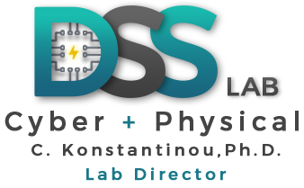

|
Decision & Secure Systems lab (DSSlab) @ FSU-CAPS
|
 |
DSSlab supports research and education in modeling and simulation of large-scale systems, cybersecurity, smart grid security, industrial control, and embedded systems. The lab is part of the Center of Advanced Power Systems (CAPS) of Florida State University. The current research focuses on both theoretical and practical cybersecurity and resilience application and evaluation in cyber-physical critical infrastructures.
The mission of the DSSlab is to develop multi-layer control and system methods towards secure and resilient cyber-physical systems.
"Everything will be binary in the end. If it's not binary, it's not the end“, almost John Lennon
Location: Center for Advanced Power Systems (CAPS)
2000 Levy Ave, Bldg A, Rm 131
Tallahassee, FL 32310, USA
DSSlab Website
|
Advice for students
This part is my attempt to collect from the web common pieces of advice in one place for my current and future students.
“You and Your Research”, by J. F. Kaiser (Mar. 1986)
“How to Succeed in Graduate School”, by M. desJardins (Dec. 1994)
“How to Review a DAC Paper”, by P. Groeneveld and N. Shenoy (2009)
“For undergrads who want to get involved in research”, by J. Eisner (2012)
“How to Be a Successful PhD Student”, by M. Dredze & H. M. Wallach (Mar. 2012)
“How to prepare a technical talk”, by. A. Narayanan (Nov. 2013)
“How to pick your first research project”, by. A. Narayanan (Nov. 2013)
“How to Read a Paper”, by S. Keshav (Nov. 2016)
“Introduction to LaTeX”, by A. Massey (Jul. 2017)
“Thoughts on the roles of the student and of the supervisor in the different phases of a PhD”, by T. Galla (Aug. 2018
|